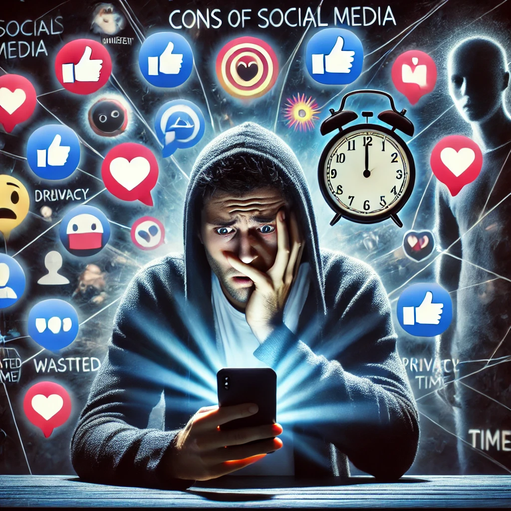

Cons of Scoial Media
The negative effects of social media include mental health problems like anxiety and despair, a decline in face-to-face engagement that impairs social skills, and serious privacy issues including cyberbullying and data security threats. The abundance of information available to users frequently causes cognitive overload, which impairs their ability to make decisions. Additionally, the presentation of unattainable standards might distort their perception of themselves and encourage feelings of inadequacy. In conclusion, social media may improve connectedness, but its drawbacks also emphasize how important it is to use it carefully and balance it with in-person relationships.
